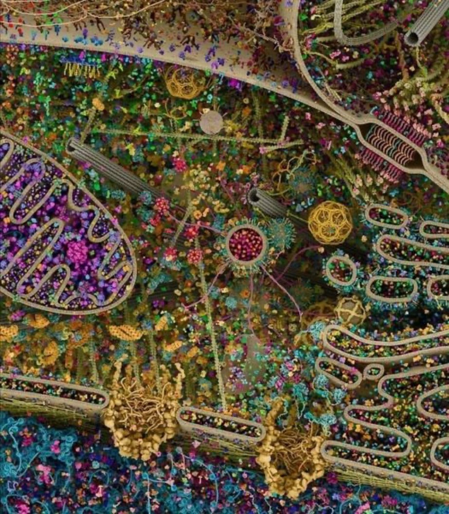

5 Concepts
“People need to be bold enough to use the word. Angela Davis said ‘One of the greatest challenges of any social movement is to develop new vocabularies.’ Words like degrowth enable new thinking and analysis, and we need that now more than ever.”
5.1 Complexity
This 3D rendering of a eukaryotic cell is modeled using data from X-ray, nuclear magnetic resonance and cryo-electron microscopy. Though the researchers weren’t able to capture all of the cell’s complexity, it is an attempt to visualize the myriad systems involved in cellular life.
